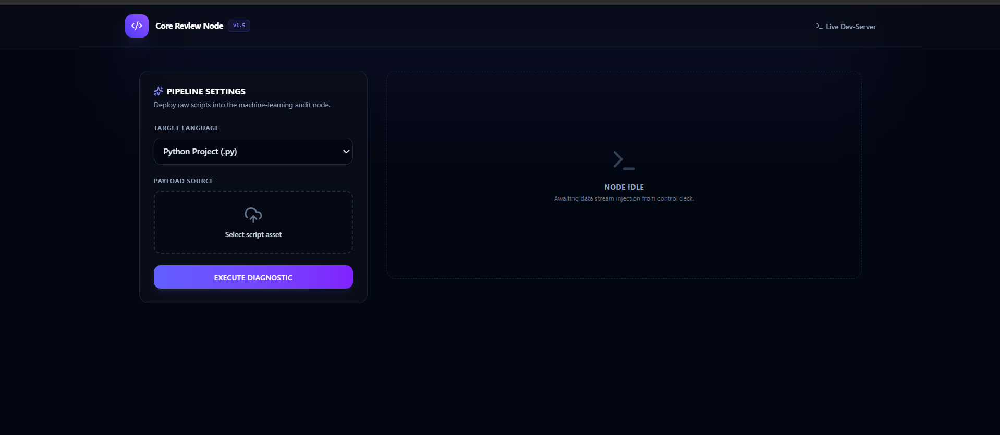

AI Assistant
Intelligent assistant berbasis AI yang dirancang untuk membantu proses decision-making dan automation. Mengintegrasikan kemampuan LLM dengan workflow yang terstruktur untuk menghasilkan output yang relevan dan akurat.
Tujuan
Membangun sistem AI yang dapat membantu pengguna menyelesaikan tugas kompleks secara lebih efisien.
Tantangan
Merancang prompt engineering yang konsisten dan membangun pipeline yang dapat diandalkan untuk berbagai jenis input.
Hasil
Sistem yang mempercepat proses analisis dan eksperimen, memudahkan pengguna dalam mengambil keputusan berbasis data.